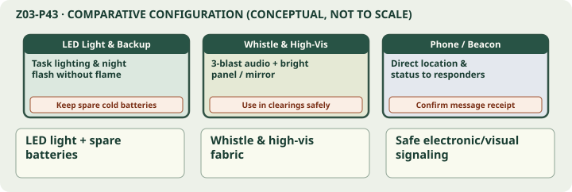

Z03-P43 · Fire and ignition · New manuscript
Use non-combustion signals and lighting when fires are banned or unsafe
Signal rescuers and illuminate camp tasks effectively without risking wildfires or wasting energy on signal fires.
When it applies · Lost-person waiting, night emergencies, burn bans and wooded or windy terrain where fires are unsafe.
Equipment · Pea-less whistle, LED headlamp with spare batteries, signal mirror, high-contrast ground cloth and phone/satellite communicator.

Actions
- Use an LED headlamp or flashlight with spare power for night work and periodic visual signaling—keeping light independent of fuel or fire permission.[C11, E02]
- Use a loud pea-less whistle (three sharp blasts as a widely recognized distress call) and bright contrasting fabric or mirror flashes in open clearings where searchers or aircraft can spot them.[T06, E02, ED]
- Rely on phone/satellite location reports and non-combustion signals whenever burn bans, wind or dry fuels make an open signal fire illegal or dangerous to the stranded party.[C01, C18, T06]
Failure recognition · Lighting a smoky brush fire in a dry forest to signal searchers, trapping the stranded group in a fast-moving wildfire.[C01, C18, C19]
Verify · Confirm whistle, working headlamp, spare batteries and bright visibility panel are immediately accessible in the top pack pocket.[E02, C11, ED]
Stop or change course · Never ignite a wildland fire as a signal; prioritize safe open visibility, audio/LED signaling and verified electronic contact when service permits.[C01, C18, T06]
Evidence and editorial notes
- C01 · Minnesota DNR · Fire Danger and Burning Restrictions (current web edition; verify at use)
- Section: Fire danger and burning restrictions map and links · Conditions: Current Minnesota location, date and jurisdiction
Support: Check current restrictions and local authority requirements before lighting.
Limitations: Restrictions can change daily with humidity, wind, and drought; verify immediately before use. · Conflicting evidence: None; local jurisdiction always supersedes general notes.
Editorial note: Mandatory legal check before any live fire card. · Specialist reviewer: Fire prevention and local land management
Primary source · checked 2026-11-24 - C11 · NPS · Ten Essentials (current web edition)
- Section: Fire and illumination · Conditions: Outdoor emergency kit
Support: Carry a dependable ignition option and protect it from moisture. Carry a separate light.
Limitations: Disposable butane lighters lose vapor pressure in freezing cold; matches fail when damp. · Conflicting evidence: None; supports redundant dry ignition kit planning.
Editorial note: Keeps lighting independent of fire-building. · Specialist reviewer: Field equipment and fire prevention
Primary source · checked 2026-11-24 - C18 · NWS Chicago · Definitions of a Fire Weather Watch and a Red Flag Warning (Current web edition)
- Section: Red Flag Warning and Fire Weather Watch Definitions · Conditions: Local fire weather outlook and land-manager order
Support: A Red Flag Warning means local conditions support extreme fire danger. Check local criteria and restrictions and adjust plans.
Limitations: A wind advisory alone is not a Red Flag Warning or an ignition permit. · Conflicting evidence: See A02 claim audit for boundaries.
Editorial note: Establishes Red Flag / high-wind conditions as automatic no-fire triggers. · Specialist reviewer: Wildland fire safety and meteorology
Primary source · checked 2026-11-25 - C19 · FEMA / Ready.gov · Wildfires (current web edition)
- Section: Wildfires > Stay Safe and Smoke Protection · Conditions: Approaching wildfire or heavy smoke in camp or community
Support: Evacuate early along open routes per official orders, protect airways from heavy smoke, and avoid turning back into active fire corridors.
Limitations: Cloth face coverings do not filter fine wildfire smoke particles; fitted particulate respirators or clean indoor air are distinct interventions. · Conflicting evidence: None; coordinates with NWS-WILDFIRE.
Editorial note: Covers wildfire escape and smoke decision thresholds in Z01/Z03. · Specialist reviewer: Emergency management and fire safety
Primary source · checked 2026-11-24 - E02 · NPS · Ten Essentials (current web edition)
- Section: Navigation; insulation; emergency shelter; emergency food and water · Conditions: Outdoor trips; adjust kit to season and route
Support: Carry essential systems including navigation, insulation, light, water and emergency shelter.
Limitations: Carrying items without practice or cold-weather verification does not ensure readiness. · Conflicting evidence: None; baseline kit system architecture.
Editorial note: Supports failure-mode packing and kit verification cards. · Specialist reviewer: Field education and search and rescue
Primary source · checked 2026-11-24 - T06 · NPS · Outdoor Emergency Plan (current web edition)
- Section: If you get lost or hurt; call for help · Conditions: Outdoor US emergency
Support: Communicate location, last known point, situation and needs. Stay put when unable to establish a safe route unless immediate danger requires movement.
Limitations: Cell signal is unreliable in backcountry terrain; pre-trip plans bridge communication gaps. · Conflicting evidence: None; core lost-person decision rule.
Editorial note: Foundation for stay/signal/move and dispatch handoff cards. · Specialist reviewer: Search and rescue
Primary source · checked 2026-11-24
Source lineage · NPS Ten Essentials and NPS outdoor emergency plan; new manuscript · Classification · New manuscript.